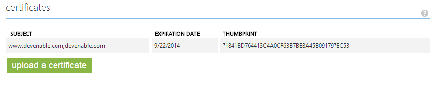
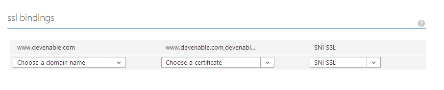

Securing Ghost on an Azure Website with SSL
This blog post shows you how you can set up SSL on an Azure hosted Ghost blog to protect your login screen.
I recently abandoned my attempts at a homebrew blog, simply because I didn't have the time or energy to maintain it and moved to Ghost. Despite being well off full release there is quite a bit out there on the Internet in terms of how to set it up. Scott Hanselman on his blog goes into how you can create it manually but there are also blog posts out there about how to set it up and configure using the Azure Web Site template which is incredibly quick and easy to do. I currently am happy enough with the simplicity of just creating a templated instance in Azure, but bare in mind that the Azure template is version 0.4 where as the latest release on GitHub is 0.4.2.
Another thing to mention is that the admin and login screens are not protected by SSL. You need to do this yourself.
Uploading Your SSL Certificate
First up, you need a SSL certificate. At present Ghost only supports single users, so your probably fine with just a self-signed certificate given that you quite possibly trust yourself. Multi-user support is coming in the future so you may want to invest in an actual SSL certificate if this is of interest to you.
Once you have your certificate log into the Azure portal, go to your website and click on the Configure tab. Scroll down to the certificates section and upload your SSL certificate. I already have an existing SSL certificate for my domain so for this example I am using that.
Once you have your certificate log into the Azure portal, go to your website and click on the Configure tab. Scroll down to the certificates section and upload your SSL certificate.

Binding Your SSL Certificate
Move down on down to the ssl bindings section and select the domain you want to add SSL with the certificate and hit save down the bottom. And that is all you need to have SSL set up on your website.

URL Rewriting
If you are disciplined then you don't need to follow this next step as you can already access your blog through HTTPS if you so desire. However, for those of us that are constantly subjected to human error you might want to ensure that you only use a HTTPS connection when logging into your blog. This can simply be done by modifying the web.config.
Note: You can edit the web.config through Visual Studio Online (Monaco), uploading a new version via FTP, or through a Git deployment.
Just add the following URL rewrite rule.
<rule name="Force HTTPS" enabled="true">
<match url="^ghost/(.*)" ignoreCase="false" />
<conditions>
<add input="{HTTPS}" pattern="off" />
</conditions>
<action type="Redirect" url="https://{HTTP_HOST}{REQUEST_URI}" appendQueryString="true" redirectType="Permanent" />
</rule>
As you can see in the match element I am checking for anything with the relative path of ghost and redirecting it to a HTTPS URL. When logging in you will note that the relative URL is /ghost/signin/ which is now protected.